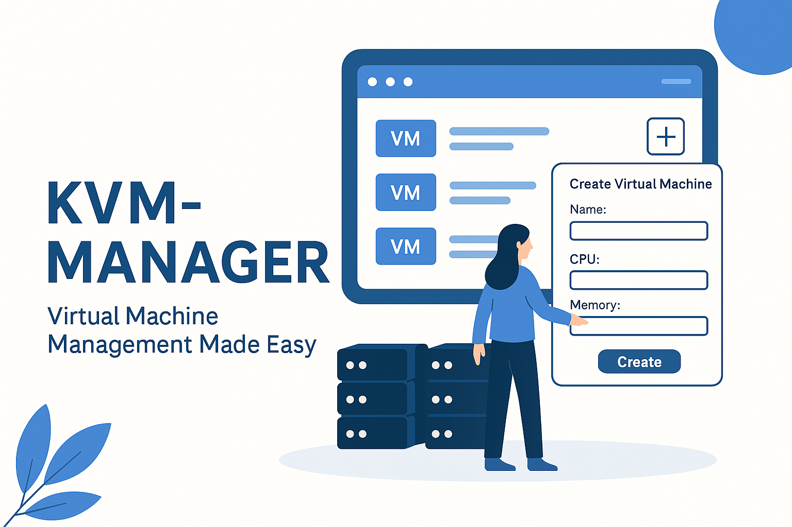

Publicado em 2025-04-19 20:23:37
Virtuno: Controle Máquinas Virtuais com Elegância e Simplicidade
Caros leitores,
É com grande entusiasmo que vos apresento o Virtuno, um projeto 100% open source desenvolvido com dedicação e visão para simplificar a gestão de máquinas virtuais KVM num ambiente moderno, web-based e acessível.
Com uma interface elegante construída em NiceGUI e integração com ttyd, o Virtuno permite:
wget https://github.com/fasgoncalves/virtuno/releases/download/v1.0.0/virtuno_1.0_all.deb
sudo dpkg -i virtuno_1.0_all.deb
Se gostaste do Virtuno podes apoiar aqui :
Virtuno nasceu com simplicidade, propósito e visão. Que vos seja tão útil quanto me foi criar.
Grande abraço,
Francisco Gonçalves
Download de informação completa sobre o Virtuno - KVM Manager :